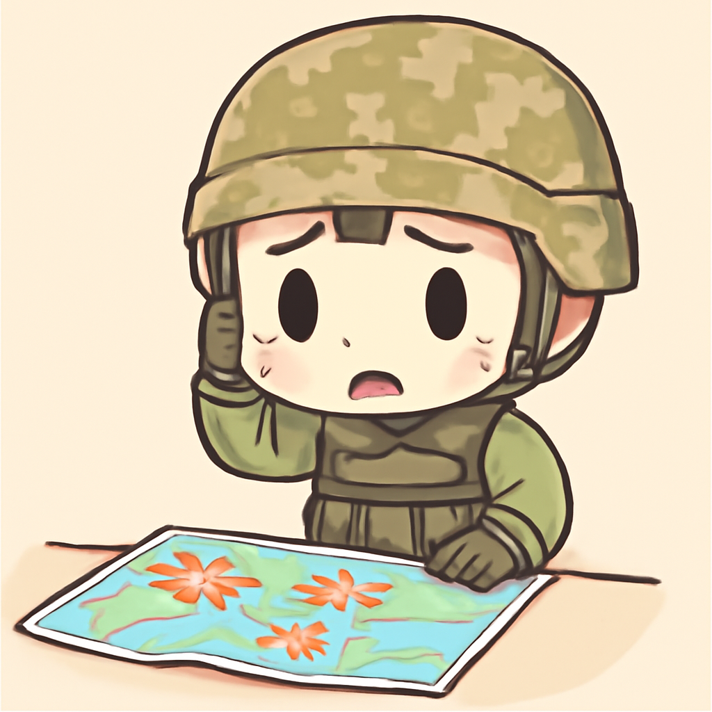

其一 · 塞浦路斯 · 渡輪翻覆造成八人遇難
塞浦路斯發生渡輪翻覆事故，八人死亡
日前，塞浦路斯發生了一起令人痛心的渡輪翻覆事件，船上有近270人，造成八人遇難，搜尋與救援行動正在進行中。這起事故不僅影響了乘客的家庭，還引發了對海上安全的廣泛關注。在這種情況下，或許我們都該好好檢查一下我們的救生衣了。
🔗 原始新聞 ↗
2026-08-31 · 以古觀今，以笑抗愁
塞浦路斯發生渡輪翻覆事故，八人死亡
日前，塞浦路斯發生了一起令人痛心的渡輪翻覆事件，船上有近270人，造成八人遇難，搜尋與救援行動正在進行中。這起事故不僅影響了乘客的家庭，還引發了對海上安全的廣泛關注。在這種情況下，或許我們都該好好檢查一下我們的救生衣了。
🔗 原始新聞 ↗
美國對伊朗的火箭發射器發動空襲，造成平民傷亡

美國最近對伊朗位於拉拉克島的火箭發射器發動了空襲，這是自七月以來的首次攻擊，伊朗方面聲稱有平民傷亡。這次行動可能加劇了美伊之間的緊張關係，讓我們再次見識到中東地區的局勢可真是瞬息萬變。
🔗 原始新聞 ↗
基輔武器庫遭襲，至少37人遇難
基輔最近發生了武器庫遭襲擊事件，造成至少37人死亡，數百人被迫撤離。這一事件引發了對武器儲存安全的質疑，也使當地人心惶惶。看來在戰爭的陰影下，大家都得學會如何保護自己了。
🔗 原始新聞 ↗
日本弘前市民集結移動古城，展現傳統文化
在日本弘前，當地市民最近舉行了一場古老的傳統活動，試圖用人力將弘前城移動。這場活動吸引了約4000人參加，展現了人們的團結和對文化的珍視。這樣的活動可真是讓人感受到，團結的力量有多麼強大！
🔗 原始新聞 ↗
瑞士音樂派對上發生槍擊事件，造成一死五傷
在瑞士的一場音樂派對上，發生了槍擊事件，導致一名22歲的女性遇害，另有五人受傷。這起事件打破了派對的歡樂氣氛，使人們不得不重新思考夜生活的安全問題。希望未來的派對能多一點音樂，少一點暴力。
🔗 原始新聞 ↗